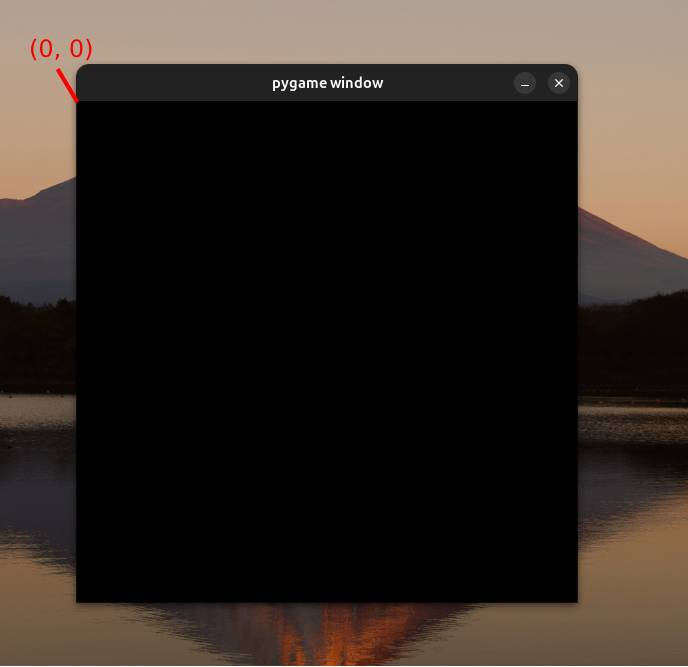

بررسی کد ساده Pygame
در این پست قصد داریم کد سادهای که با استفاده از کتابخانه pygame نوشته شده است را بررسی کنیم. این کد یک پنجره گرافیکی ایجاد کرده و رویدادهای مختلف را ثبت و نمایش میدهد. در ادامه هر خط از کد به صورت کامل توضیح داده شده است.
import pygame
در ابتدا کتابخانه pygame را وارد میکنیم. این کتابخانه برای ایجاد و کنترل برنامههای گرافیکی، بازیها و موارد مشابه در پایتون استفاده میشود.
display = pygame.display.set_mode((500, 500))
در این خط، یک پنجره گرافیکی با ابعاد ۵۰۰x۵۰۰ پیکسل ایجاد میشود. تابع set_mode یک پنجره ایجاد کرده و آن را برای نمایش محتوای گرافیکی آماده میکند. متغیر display برای نگهداری این پنجره به کار میرود.
game = True
این خط یک متغیر به نام game تعریف میکند و مقدار آن را برابر True قرار میدهد. این متغیر برای کنترل چرخه اصلی بازی (یا برنامه گرافیکی) استفاده میشود.
while game:
این خط آغاز یک حلقه بینهایت است که تا زمانی که مقدار game برابر True باشد، اجرا خواهد شد. این حلقه برای اجرای مداوم بازی یا برنامه گرافیکی استفاده میشود.
events = pygame.event.get()
در این خط، تمامی رویدادهای موجود در صف رویدادها دریافت میشوند. pygame.event.get() یک لیست از تمامی رویدادهای ورودی مانند فشار دادن کلیدها یا کلیک کردن ماوس را برمیگرداند.
for event in events:
این حلقه برای عبور از روی تمامی رویدادهایی که در لیست events وجود دارند استفاده میشود. هر رویداد به صورت جداگانه بررسی میشود.
print(event)
درون حلقه، هر رویداد به کنسول چاپ میشود. این کار برای مشاهده نوع و جزئیات هر رویداد انجام میگیرد.
pygame.display.update()
در این خط، صفحه نمایش بهروزرسانی میشود. این تابع تمام تغییراتی که در پنجره گرافیکی ایجاد شدهاند را نمایش میدهد.
نحوه نمایش صفحه در Pygame
در Pygame، سیستم مختصات به گونهای تنظیم شده است که نقطه شروع (۰,۰) در گوشه بالای سمت چپ پنجره نمایش قرار دارد. این به این معنی است که مختصات y به صورت افزایشی از بالا به پایین تغییر میکند، به این صورت که مقادیر بزرگتر به سمت پایین حرکت میکنند. بنابراین، اگر شما چیزی را در مختصات y=۰ رسم کنید، این شیء در بالای پنجره ظاهر میشود.
این سیستم مختصات ممکن است در مقایسه با برخی دیگر از سیستمهای گرافیکی که نقطه شروع مختصات را در گوشه پایین سمت چپ قرار میدهند، معکوس به نظر برسد. در نتیجه، در هنگام طراحی و پیادهسازی گرافیک در Pygame، لازم است که به این ویژگی توجه داشته باشید.
تصویر نمایش
تماشای ویدیو آموزشی
برای مشاهده توضیحات بیشتر و دیدن کد در عمل، میتوانید ویدیو آموزشی ما را تماشا کنید:
تماشا کنید